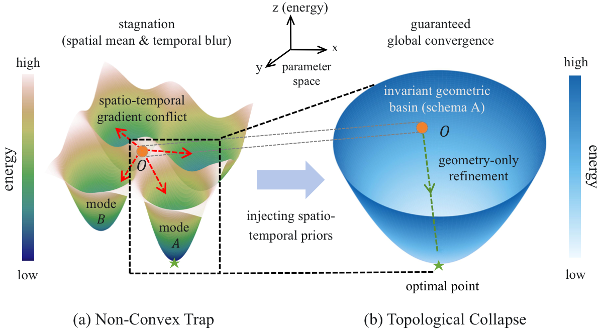
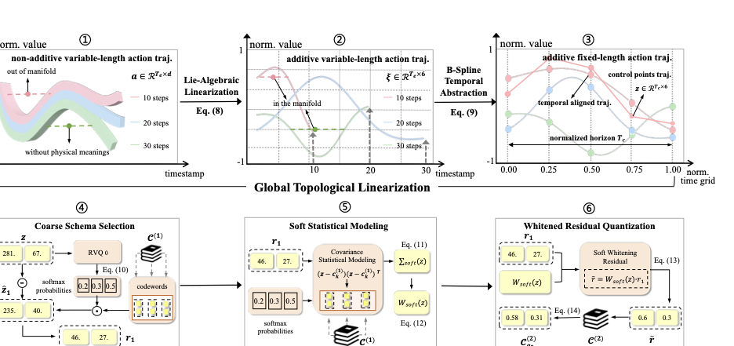
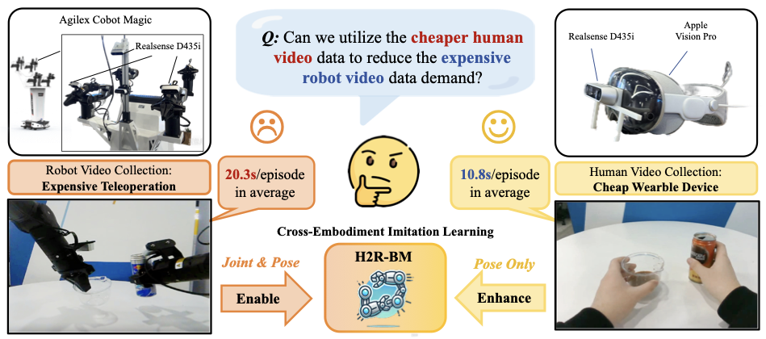

General Covariant Action Modeling
Constructing generalized manifolds for action learning through spatio-temporal decoupling.
See project ->Thanks for stopping by!
I am a Ph.D. student at the Institute of Automation, Chinese Academy of Sciences. My research interests include prompt learning, domain generalization, and representation learning for vision-language-action models.
My current projects explore generalizable action representations for embodied intelligence, including covariant action modeling, semantic-action manifold alignment, and human-to-robot transfer for robotic manipulation. Learn more about my research interests in publications.
Get in touch by sending me a note.
Researcher in embodied intelligence, curious about how agents learn actions that generalize across scenes, tasks, and embodiments.
I study prompt learning and domain generalization, and use them to build robust representations for vision-language-action models. My recent work investigates generalized action manifolds and metric alignment between semantic and action spaces.
General Covariant Action Modeling · ICML · First Author
Before joining CASIA, I received my B.S. in Computer Science and Technology from the University of Chinese Academy of Sciences. I have also worked on embodied vision-language-action pretraining at BAAI and pretrained vision-language model generalization at Shanghai Jiao Tong University.

Constructing generalized manifolds for action learning through spatio-temporal decoupling.
See project ->
Bridging vision-language and action manifolds via Gromov-Wasserstein alignment.
See project ->
Leveraging human videos to improve generalization in robotic bimanual manipulation.
See project ->